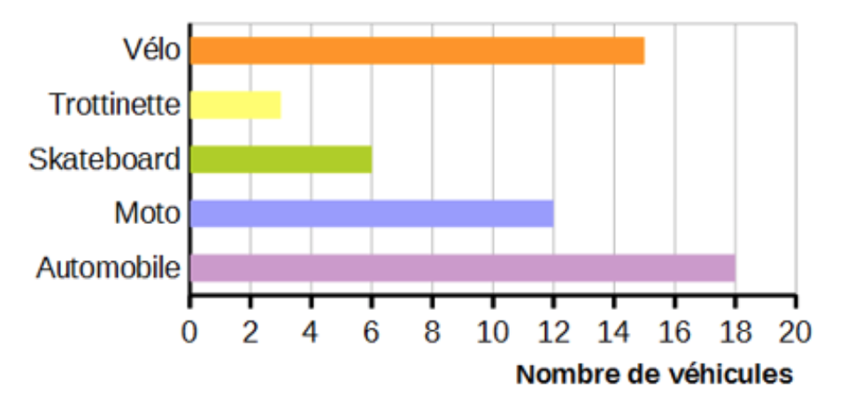
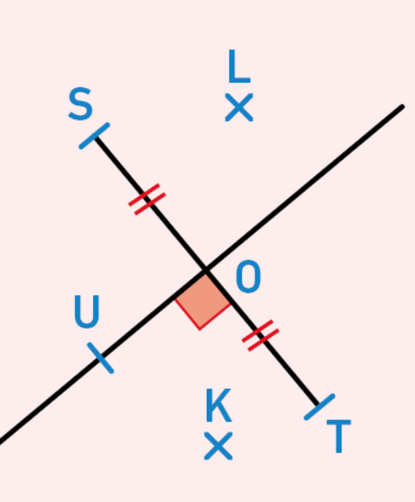

On considère le nombre : 543 , 5 |
|
Partie entière = |
Partie décimale = |
Fraction
décimale :
|
Décomposition : |
Le chiffre des … ► dizaines = |
Le nombre de … ► dizaines = |
C  □ Il y a plus de 10 véhicules dans trois catégories □ Il y a 64 véhicules en tout □ Il y a 3 fois moins de skateboards que de motos □ Il y a autant de trottinettes et de vélos que de voitures □ Il y a 6 skateboards et 2,5 trottinettes
|
|
V  On considère la figure ci-contre. 1. Le plus court chemin pour aller de T à S est le segment [TS]. …………. 2. Le point K est plus proche du point S que du point T. …………… 3. Le point L est à la même distance du point S que du point T. …….. 4. Le point U appartient à la médiatrice du segment [ST]. ……………...
|
|